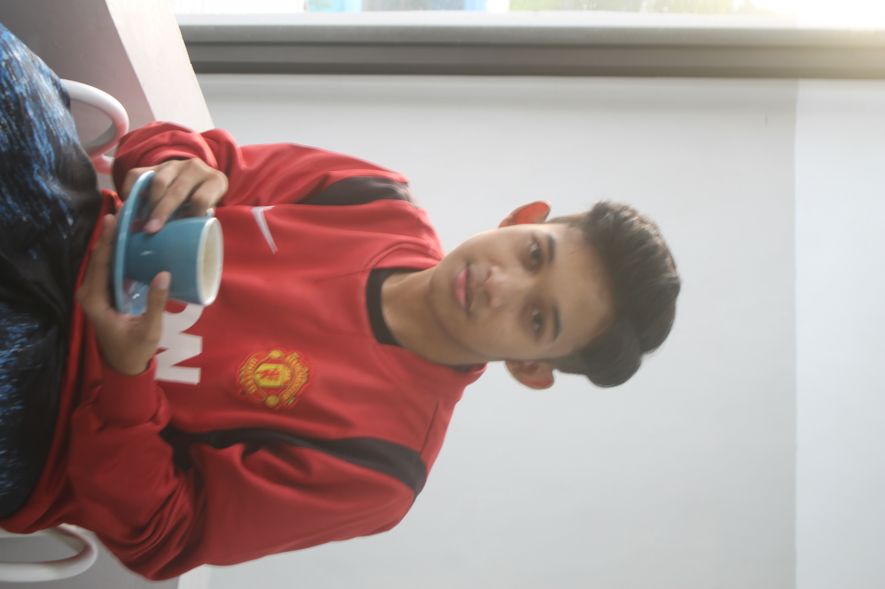
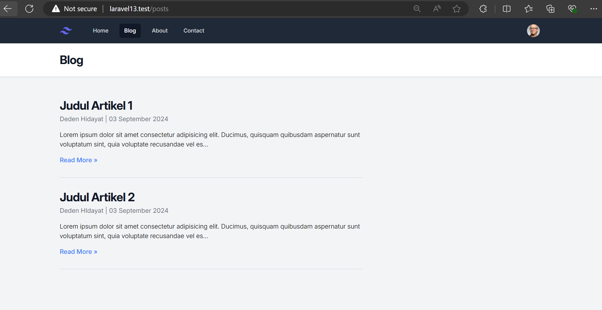

Selamat datang di portofolio saya! Saya seorang Backend Developer
Saya Mahasiswa Semester 5 dari Universitas Sebelas April dengan Program Studi Informatika. Saat ini saya sedang mengikuti Program Studi Independen di Mitra Maxy Academy
Deskripsi: Proyek ini adalah aplikasi blog sederhana yang dikembangkan menggunakan framework Laravel 13. Aplikasi ini memiliki fitur dasar untuk menampilkan daftar artikel yang sudah dipublikasikan. Setiap artikel memuat judul, penulis, tanggal publikasi, dan ringkasan singkat dari konten artikel. Aplikasi ini juga mendukung navigasi antar halaman seperti Home, Blog, About, dan Contact. Teknologi yang Digunakan: 1. Laravel 13 – Sebagai framework utama untuk pengembangan backend dan manajemen routing. 2. Blade Templates – Untuk rendering frontend secara dinamis menggunakan data dari backend. 3. HTML & CSS – Untuk mengatur tampilan antarmuka pengguna. 4. JavaScript – Diterapkan untuk interaktivitas sederhana di bagian navigasi. Tujuan Proyek: Proyek ini bertujuan untuk memberikan platform yang mudah digunakan bagi penulis untuk membagikan artikel mereka secara online, sekaligus menyediakan pembaca dengan tampilan yang responsif dan sederhana.
Email: dedenha20@gmail.com
LinkedIn: Deden Hidayat
Instagram: deden_h1